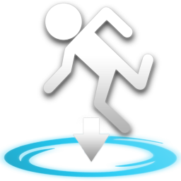

Witamy na stronie głównej!
Brygada od Brygadzistów dla Brygadzistów.
Wybieraj kategorię, obczajaj zawartość i odkrywaj magię tej witryny.
Nie gryziemy, jeszcze.
INFORMACJE
„Brygada” to witryna stworzona przez tego drugiego we współpracy z Brygadzistami.
Jest to hobbystyczny projekt, którego celem jest archiwizacja oraz udostępnianie twórczości związanej z naszą trójką Brygadzistów.
Witryna powstała, aby gromadzić i prezentować nasze kreatywne dzieła w różnych formach.
Posiadamy mnóstwo treści oraz rozbudowaną historię, która wciąż się rozwija.
W tej zakładce dowiesz się więcej o witrynie i o nas - Brygadzistach.
Życzymy miłej lektury!
GENEZA
Prace nad konceptem i projektem witryny rozpoczęły się 6 czerwca 2024 roku, a pierwsza funkcjonalna i akceptowalna wersja została opublikowana 7 czerwca 2024 roku.
Początkowym celem było udostępnienie novelki „Smocze Jaja” oraz systemu komiksowego dla „Visage”.
Z czasem witryna zaczęła otrzymywać coraz więcej poprawek, co wzbudziło regularność w jej rozwoju.
Dzięki temu, poza poprawkami, zaczęto wprowadzać również ulepszenia wizualne oraz techniczne w kodzie witryny.
Z pierwotnego planu prostej archiwizacji naszych projektów przeszliśmy do bardziej oficjalnego podejścia do tworzenia witryny.
Dlatego, jesteśmy tu, gdzie jesteśmy.
ZAWARTOŚĆ
Ewolucja witryny pozwoliła na znaczące rozszerzenie zawartości tego początkowo prostego projektu.
Oferujemy treści informacyjne dotyczące samej witryny oraz zagadnień związanych z Brygadzistami.
Dysponujemy bogatą biblioteką twórczości novelowej oraz komiksowej.
Udostępniamy również unikalną bibliotekę prostych gier i skryptów.
Zarządzamy naszymi mediami społecznościowymi, które możesz także tutaj sprawdzić.
To wszystko i wiele więcej czeka na Ciebie do odkrycia.
ZESPÓŁ
Brygada to nie tylko witryna, ale także zespół, który dostarcza treści, jakie możesz zobaczyć dzisiaj.
„Ten Pierwszy” – Grafik, twórca „Visage” oraz ikona Brygadzistów (obok Brygi).
„Ten Drugi” – Autor witryny, skryptów, gier oraz dzieł takich jak „Smocze Jaja” i „Shitpost”.
„Ten Trzeci” – Trzecie koło u wozu, z niezniszczalną chęcią do pracy, który również tworzy własne modele i projekty.
Oraz inni, którzy pomagali przy testowaniu witryny i zgłaszali błędy występujące na stronach.
Nie przyjmujemy więcej osób – kończy się miejsce w piwnicy!
OSIĄGNIĘCIA
Możemy również pochwalić się naszymi osiągnięciami zdobytymi w trakcie pracy nad tą witryną.
Nasza witryna otrzymała kiedyś nieistniejącą nagrodę w nieistniejącym konkursie za nieistniejącą kategorię najlepszej witryny w Toruniu.
Jedna z dużych aktualizacji nie zajęła nam 5 lat pracy.
Kiedyś pani z rynku stwierdziła, że przystojni z nas kawalerzy.
Ehm... no cóż.
Lista jest naprawdę długa, ale nie chcemy Was zanudzać.
Chyba rozumiecie, prawda?
PORADNIK
Masz problem z nawigacją po stronie?
Nie wiesz, co robi dany przycisk?
Kolega odmawia współżycia seksualnego?
W tej zakładce dowiesz się o najważniejszych funkcjach naszej strony – gdzie są umieszczone i jak działają.
Dzięki temu korzystanie z niej stanie się prostsze i bardziej intuicyjne.
Pamiętaj, to strona dla każdego, ale jednocześnie dla nikogo.
Traktujemy wszystkich równo... i nierówno.
Więc po co męczyć się z problemami, skoro możesz mieć ich mniej.
UPRASZCZATOR

Rodzaj Funkcji:
Przycisk
Lokalizacja:
Na górze po lewej
Wyłącznie Strona Główna
Upraszczator to specjalna funkcja działająca jako przycisk, która po naciśnięciu przekierowuje użytkownika do uproszczonej wersji strony, zarówno pod względem wyglądu, jak i dostępności.
Dzięki temu każdy może skorzystać z prostszej, bardziej przejrzystej wersji witryny.
Funkcja ta jest idealna dla użytkowników, którzy przeglądają stronę z innych urządzeń niż komputer, ze względu na problemy z wyświetlaniem pełnej wersji strony na takich urządzeniach.
Upraszczator znajduje się w lewym górnym rogu strony i wygląda jak pusty, lekko zaokrąglony kwadrat.
UWAGA!
Na chwile obecną ta funkcja nie jest jeszcze dostępna!
RESETER

Rodzaj Funkcji:
Przycisk
Lokalizacja:
Na górze po prawej
Na każdej stronie
Resetor to funkcja działająca jako przycisk, której głównym zadaniem jest odświeżenie strony po jego naciśnięciu.
Jest to prosta, ale niezwykle przydatna funkcja, która pozwala na szybsze odświeżenie strony w porównaniu do manualnego odświeżania w przeglądarce.
Resetor, podobnie jak Upraszczator, znajduje się w górnym rogu strony, ale po prawej stronie i również wygląda jak pusty, lekko zaokrąglony kwadrat.
BRYGADOWY TEKŚCIK
Rodzaj Funkcji:
Tekst
Lokalizacja:
Na górze po środku
Na każdej stronie
Brygadowy Tekścik (w skrócie BTXT) to tekstowa funkcja, która pojawia się na każdej stronie i wyświetla losowy tekst z puli dostępnych w bazie.
Za każdym razem, gdy strona zostanie odświeżona lub wyświetlona, tekst zmienia się w sposób losowy.
Dzięki tej funkcji, korzystając z Resetora, użytkownik możę szybko sprawdzić inne wersje możliwych tekstów.
Baza zawiera ponad 200 różnych tekstów, które są zróżnicowane pod względem treści.
Co ciekawe, jeśli ten sam tekst pojawi się po raz drugi, jego czcionka automatycznie zmienia kolor na złoty.
SPIS TREŚCI

Rodzaj Funkcji:
Blok
Lokalizacja:
Na środku po lewej
Na każdej stronie
Spis Treści to specjalny blok, który pojawia się na każdej stronie i jest umiejscowiony po środkowej lewej stronie.
Blok ten zawiera kilka kategorii, których użytkownik może przeglądać i scrollować przy pomocy myszy.
Po kliknięciu na nazwę tekstu w wybranej kategorii, w bloku głównym wyświetlana jest zawartość powiązana z tym tekstem.
Więcej informacji o samym bloku głównym znajduje się pod tym tekstem.
BLOK GŁÓWNY

Rodzaj Funkcji:
Blok
Lokalizacja:
Na środku po prawej
Na każdej stronie
Blok Główny to specjalny blok, który pojawia się na każdej stronie, a tekst, który właśnie czytasz, znajduje się właśnie w nim.
W tym bloku wyświetlane są treści powiązane z kategoriami zawartymi w Spisie Treści.
Czasami treści w Bloku Głównym mogą zawierać załączniki do podstron lub linków, które po kliknięciu przekierowują użytkownika do odpowiednich miejsc.
Podobnie jak Spis Treści, Blok Główny można przewijać.
INSTRUKCJE

Rodzaj Funkcji:
Tekst i Blok
Lokalizacja:
Na dole po prawej
Na każdej stronie
Instrukcja to specjalna funkcja tekstowa, która znajduje się na każdej stronie i zawiera wyjaśnienia pojęć związanych z daną sekcją.
Po naciśnięciu na obramowanie lub ikonę notesu pojawi się dodatkowy blok instrukcji, przyciemniający resztę strony.
Blok instrukcji zawiera ostrzeżenie dotyczące wczesnego dostępu, krótką informację wstępną o samej instrukcji, listę pojęć pomocnych dla użytkowników, którzy nie rozumieją danego tekstu.
Wyjście z instrukcji można wykonać na kilka sposobów, czy to naciskając klawisz ESC, klikając na tekst informujący o wyjściu, lub nawet klikając w dowolne miejsce poza blokiem instrukcji.
UWAGA!
Funkcja ta została dopiero co wdrożona.
Więcej informacji znajdziesz w samej instrukcji.
AKTUALNOŚCI
W tej zakładce, znajdziesz najnowsze i najciekawsze informacje związane z nami - Brygadzistami!
Każdy temat to kolejna dawka nowości, wywiadów, wykładów oraz unikalnych historii.
Wszystko stylizowane na gazetkach z nowościami, aby dostarczyć ci wiadomości w przystępnej i atrakcyjnej formie.
Każdy news posiada swój obrazek, opis lub wywiad, byś mógł jeszcze bardziej zanurzyć się w świecie Brygadzistów.
Wybierz interesujący Cię temat, klikając na jego nazwę poniżej lub po prostu przewijaj stronę, aby odkrywać kolejne historie.
Pozostań na bieżąco z najważniejszymi wydarzeniami!
| AKTUALNOŚCI? | SKRÓT 2024 | SONICZNE TRZY | POWRÓT TRÓJECZKI W YOMI |
| POCZĄTEK I KONIEC SERWERA UNTURNED |
Co stało się z zeszłorocznymi aktualnościami?
Moja szczera reakcja na tą informacje.
Wraz z wypuszczeniem styczniowej aktualizacji witryny, użytkownicy zauważyli wiele zmian – od kosmetycznych poprawek po większe ulepszenia funkcjonalności. Jednak jedna zmiana wzbudziła szczególne zainteresowanie i lekką konsternację: brak zeszłorocznych tematów w sekcji Aktualności.Osoby, które rozpoczęły przegląd nowej wersji witryny, szybko dostrzegły, że wcześniejsze tematy zniknęły, a na ich miejscu pojawiły się jedynie najnowsze informacje. Niektórzy podejrzewali, że jest to błąd, jednak sprawa szybko wyjaśniła się dzięki oficjalnej odpowiedzi wirtualnej asystentki witryny, Brygi.„Usuwamy stare tematy co roku w celu optymalizacji strony. Zbyt duże ilości danych spowalniają przeglądanie, dlatego ważne jest dla nas utrzymanie optymalnej wydajności witryny.”Z tego wynika, że czyszczenie starszych wpisów z sekcji Aktualności stanie się coroczną tradycją witryny. Choć ma to sens z punktu widzenia wydajności, niektórzy użytkownicy wyrazili rozczarowanie, że wartościowe treści mogą zostać zapomniane. Choć obecna polityka witryny zakłada usuwanie starszych treści, wielu użytkowników liczy na inne rozwiązanie. Być może w przyszłości pojawi się archiwum – miejsce, gdzie starsze wpisy mogłyby być przechowywane bez wpływu na wydajność witryny.Na razie pozostaje nam jedynie przyzwyczaić się do nowego porządku i cieszyć się świeżymi treściami, które co roku będą nas zaskakiwać. Czy rok 2025 przyniesie więcej takich zaskoczeń? Czas pokaże!
Żegnamy średni rok i witamy średniejszy rok.
Fotografia internauty na sylwestrze z Polsatem Gejms.
Rok 2024 był definitywnie rokiem, którego nie będzie nam brakować. Chociaż przyniósł nam wiele nowych rzeczy, znajomości, projektów i tę witrynę, to był również pełen frustracji, bólu i przeciętności, które musieliśmy dzielnie znieść, aby dotrzeć tutaj – czyli donikąd.Na szczęście ten złośliwy rok dobiegł końca, a ostatnie sekundy pożegnaliśmy z przytupem – podczas transmisji z toruńskiego Sylwestra Polsat Gejms. Co mogło pójść źle? Absolutnie wszystko! Doda zaczęła swój koncert, zanim ktokolwiek zorientował się, że impreza miała w ogóle ruszyć. Stare, oklepane kawałki były puszczane w kółko, skutecznie zamieniając radosne odliczanie w test wytrzymałości dla uszu. Gdy wybiła północ i rok 2024 poszedł w zapomnienie, prowadzący zadbali o wspólną integrację tłumów – podsycając atmosferę jednością, a być może i dzieleniem się chorobami wenerycznymi.Nie wszyscy jednak uczestniczyli w tym sylwestrowym szaleństwie. Bo przecież nic tak nie przyspiesza końca złego roku jak spanie przez jego ostatnie godziny. Szczęśliwcy, którzy zaopatrzyli się u Krzysia w bimber, mogli pożegnać 2024 w rozmytym stanie trzeźwości. Większość ludzi siedziała w domach, oglądając Netflixa lub kontemplując sens życia. Jeszcze ktoś gdzieś strugał badyla, a ktoś inny zostawił niespłukane gówno w kiblu.Zatem, rok 2025 wita nas nową porcją nadziei, którą wszyscy szybko stracimy, a także postanowień, które większość z nas porzuci do końca stycznia. Jedno jest pewne! Dla Brygady będzie to rok nowych wyzwań i aktualizacji witryny, bo przecież kontent sam się nie zrobi! Niech nowy rok przyniesie wam wszystko, czego nie potrzebujecie, ale i tak dostaniecie.
Soniczne Trzy - Szybki jak przecinek [Recenzja]
Miniaturka recenzji by Pusia Faja
Nie trzeba nikomu przedstawiać niebieskiego jeża biegającego szybciej niż twój stary po dwuseteczkę. Maskotka SEGI, bohater zwalczający zło i symbol silnika platformówek (jeśli mówimy o 2D) to jedna strona medalu. Ale czy Sonic jako postać filmowa zyskał równie ciepłe przyjęcie? Nie do końca. Pierwsza część filmowa wystartowała z koszmarnym designem głównej postaci i mocno budżetowym podejściem skierowanym głównie do dzieci. Mimo to, SEGA nie poddała się, a trzeci film serii okazał się… no cóż, filmem.„Sonic 2” przyjął się lepiej niż pierwsza część. Cudem się stało, że sequel ekranizacji gry okazał się lepszy od oryginału. Recenzje najczęściej wyglądały tak: jeśli jesteś fanem, będziesz zachwycony, jeśli szukasz solidnej ekranizacji gry – eeehhhhh…O sequelu dowiedzieliśmy się już po napisach końcowych „Sonic 2” – klasycznie. Główny motyw? Powrót Shadowa! Jednak budziło to pytania: jak zostanie to poprowadzone? Po premierze pierwszego zwiastuna w lutym 2023 stało się jasne, że „Sonic 3” będzie czerpać inspiracje z „Sonic Adventure 2” – zarówno w kwestii akcji, motywów, jak i muzyki (Żyj i się ucz). SEGA rozpoczęła też kampanię „Fearless Year of Shadow”, promując nie tylko film, ale i grę „Shadow Generations”.Zacznę od prostego stwierdzenia: jeśli nie jesteście fanami nielogicznych zagrań filmowych, fabularnych dziur, humoru dla dziesięciolatków i średniego dubbingu (serio, polski Sonic coraz bardziej irytuje), to ten film nie jest dla was. Serio, nie psujcie sobie i innym seansu. Ale jeśli chodzi o ekranizację gry – to jest jedna z lepszych. To już nie tylko film dla fanów Sonica i Dragon Balla – to solidnie zrobiona adaptacja. Jest więcej „Sonic Adventure” w „Sonic Adventure”, ale to wciąż wierna ekranizacja z własnymi rozwiązaniami. Można wręcz powiedzieć, że to bardziej „Sonicowy What If” niż klasyczna adaptacja. Shadow został przedstawiony świetnie – jego narracja, teksty i wygląd to błogosławieństwo. Knuckles? Nadal jest pokémonem. Nie, czekaj, to był Tails. W każdym razie – film wydaje się poprowadzony przez zupełnie inną ekipę reżyserską. Mniej ludzi, więcej dramatu, a władca pączków dalej w szczytowej formie. I to nie tylko fanowskie gadanie. Ludzie zauważyli, że film jest po prostu dobry. Czas mijał błyskawicznie, ilość wątków była spora, postacie miały swoje motywy i cele, a masa usprawnień nad poprzednikami wyniosła ten film na wyższy poziom. Na tle poprzednich części i innych adaptacji growych – to czołówka. Można spokojnie zagrać w „Sonic Adventure 2” i czuć się w pełni usatysfakcjonowanym. Wspaniałe nawiązania, dobre momenty humorystyczne, emocjonalne sceny, świetna grafika, CGI i… MUZYKAAAAAAAAAAA! To wszystko sprawia, że „Sonic 3” to nie tylko kolejny film z jeżem – to adaptacja, na jaką fani zasługiwali.„Sonic 3” to najlepszy film w serii i jedna z najlepszych ekranizacji gier. Nie jest pozbawiony wad, ale ma wszystko, czego potrzeba: akcję, dramat, humor i nostalgiczne nawiązania. Jeśli jesteś fanem Sonica – koniecznie obejrzyj. Jeśli szukasz solidnego filmu akcji – warto dać mu szansę. A jeśli wciąż pamiętasz pierwszego koszmarnego Sonica – ciesz się, że już go nie ma.
Kolejna niesamowita walka na arenie Yomi Hustle! Triumfalne zwycięstwo „Tego Trzeciego”.
Nagranie z przebiegu kolejnego turnieju.
Czy ktoś jeszcze pamięta „Przebudzenie Trójeczki”, które dwa miesiące temu zszokowało scenę Yomi Hustle? Wydarzenie to zapisało się w historii jako spektakularna klęska „niepokonanego” mistrza i narodziny nowej legendy. Teraz, w długo oczekiwanym rewanżu, „Ten Trzeci” udowodnił, że jego poprzednie zwycięstwo nie było dziełem przypadkowym.Wielki rewanż na tej samej arenie był momentem, na który czekali wszyscy fani. Mistrz, nie zamierzając ponownie paść ofiarą „Tego Trzeciego”, zmienił swoją strategię, prezentując nowe, zaskakujące techniki. Z kolei nasz hoplita pozostał wierny swojemu stylowi, udowadniając, że sprawdzona taktyka to najlepsza taktyka. Zaledwie kilka sekund od rozpoczęcia pojedynku „Ten Trzeci” wyprowadził pierwszy cios, potężnie naruszając obronę przeciwnika. Publiczność oszalała, a emocje sięgnęły zenitu, przekraczając poziom wydajności układu trawiennego Kapitana Dupy.Zdesperowany mistrz nie zamierzał się poddać. Sięgnął po swój najsilniejszy, lecz kradziony ruch – „Atak Smoka” prosto od legendarnego SonGo. Uderzenie trafiło „Tego Trzeciego” i mogło zakończyć pojedynek… ale tylko w innej rzeczywistości. Nasza „Trójeczka” przyjeła cios na klatę i odpowiedziała finałowym wpierdolem, który przesądził o losach walki.Po raz kolejny to „Ten Trzeci” opuścił arenę jako zwycięzca, a jego fani oszaleli z radości. To już drugie pokonanie wielkiego mistrza, co rodzi pytanie – czy doczekamy się kolejnych triumfów tego niezwykłego wojownika? Publiczność czeka. Kolejne pojedynki są tylko kwestią czasu.
Start i koniec pierwszego serwera Unturned w Toruniu!
Fotografia pamiątkowa trzech śmiertelników na granicy ziemi kanadyjskiej i rosyjskiej.
Po latach zmagań, klęsk i nieudanych prób postawienia stabilnego serwera Unturned, toruńscy Brygadziści w końcu dokonali niemożliwego. Nie tylko udało im się uruchomić serwer, ale także znaleźć przejrzystą konfigurację i poradniki, które uczyniły hostowanie bajecznie proste.Choć „Ten Drugi” rozpoczął pierwsze testy, ostatecznie serwer przeszedł na sprzęt „Tego Trzeciego”, który zapewnił lepszą wydajność i większą stabilność. Już 6 stycznia rozpoczęły się testy, a 7 stycznia oficjalnie wystartował pierwszy serwer Unturned Brygadzistów. Głównym obszarem była gigantyczna mapa „AMIO” (All Maps in One – not really, just seven), gdzie gracze oddali się survivalowej przygodzie pełnej wspólnej eksploracji, budowania baz i zbierania surowców. Kluczowe lokacje zostały zwiedzone, stosy przedmiotów zebrane, a kooperacja kwitła w najlepsze.Niestety, jak to w życiu bywa, wszystko, co dobre, kiedyś się kończy. W nocy z 17 na 18 stycznia serwer nagle przestał odpowiadać. Powód? Awaria dysku, na którym był przechowywany. W obliczu tej tragedii zwróciliśmy się do hosta serwera o komentarz w sprawie możliwych przyczyn awarii. Odpowiedź była krótka, treściwa i pełna emocji:„Ten chuj” (obok zdjęcie dysku, na którym spoczywał serwer).I tak zakończyła się historia pierwszego serwera Unturned w Toruniu. Jego los na zawsze pozostanie tajemnicą, ale jedno jest pewne – dla graczy była to bolesna strata i symboliczny koniec jednej z najpiękniejszych przygód. Czy kiedyś powróci? Czas pokaże.
AKTUALIZACJE
W tej zakładce, znajdziesz wszystkie najnowsze i najciekawsze zmiany związane z naszą witryną - Brygadą!
Każda aktualizacja to kolejny krok naprzód, pełen ulepszeń, nowych funkcji i unikalnych dodatków.
Całość stylizowana jest na kultowy spis aktualizacji z Team Fortress 2, aby dostarczyć Ci informacji w czytelnej i atrakcyjnej formie.
Każda wersja zawiera swój numer, nazwę, datę, krótki opis oraz pełną listę wprowadzonych nowości.
Wybierz interesującą Cię aktualizację, klikając na jej numer poniżej, lub po prostu przewijaj stronę, aby odkrywać zmiany własnoręcznie.
Pozostań na bieżąco z najważniejszymi ulepszeniami i rozwojem Brygady!
| 1.2.1c | 1.2.1b | 1.2.1a | 1.2.1 | 1.2.0 |
| 1.1.0 | 1.0.0 |
[1.2.1c] - Sekcje Novelowe
28 stycznia 2025
Pierwsza aktualizacja w 2025 roku, skupiająca się na ulepszeniu zawartości opowieści, zwłaszcza w sekcji novelek, oraz poprawie niektórych istniejących treści. Sekcja „Novelki” została podzielona na osobne części, a każda z nich zyskała dodatkowe informacje na temat danej noveli. Dodatkowe zmiany otrzymała także sekcja „Informacje”, a w tej aktualizacji wdrożono pierwszą wersję instrukcji strony głównej. Do zmian wprowadzonych w tej aktualizacji można zaliczyć:
- Dodano nową zawartość na stronie głównej witryny. Do zawartości wprowadzonej można zaliczyć:
- Dodano trzy nowe sekcje w kategorii Opowieści:
- Smocze Jaja
- Alergic Boy
- 3 (Niedostępna Zawartość)
- Zaimplementowano wczesną wersję instrukcji, zawierającą:
- Ostrzeżenie tekstowe
- Informacje o instrukcji
- Trzy niewyjaśnione pojęcia
- Testowy wygląd wizualny
- Skrypt instrukcji
- Link do oficjalnego e-maila brygadowego
- Dodano trzy nowe sekcje w kategorii Opowieści:
- Zmiany techniczne i wizualne na stronie głównej. Do zawartości zaktualizowanej można zaliczyć:
- Zmieniono ikonę witryny na bardziej oficjalną
- Zmieniono logo witryny z Mangora na „Bryge”
- Zmieniono obraz i opis dla domyślnego bloku głównego
- Zaktualizowano sekcję Informacje:
- Dodano nowe informacje wstępne
- Zaktualizowano genezę i zawartość
- Dodano Zespół oraz Osiągnięcia jako dwie nowe podsekcje
- Zaktualizowano sekcję Poradnik:
- Poprawiono pare tekstów w poradniku
- Poprawiono obrazy instrukcji w poradniku
- Zaktualizowano informacje o instrukcji w poradniku
- Dodano pięć nowych tematów w Aktualnościach
- Usunięto zeszłoroczne tematy z Aktualności
- Zapisano nową aktualizację
- Zaktualizowano kategorię Opowieści:
- Przeniesiono zawartość z novelek do osobnych sekcji
- Usunięto sekcję Novelki oraz komunikat „JUŻ WKRÓTCE”
- Zmieniono logo prezentacyjne dla obu novelek
- Zaktualizowano informacje o stanie produkcji novelek
- Zaktualizowano datę ostatniej aktualizacji dla Alergic Boy
- Usunięto stare, nieużywane pliki z względu na nowy rok
- Zaktualizowano pliki lokalne
- Oraz wprowadzono drobne lub ukryte zmiany
[1.2.1b] - Aktualności i Aktualizacje
8 grudnia 2024
Poprawkowa i uzupełniająca aktualizacja zawartości kategorii „Start” na stronie głównej. Koncentruje się na rozszerzeniu funkcjonalności wprowadzonej w poprzedniej aktualizacji o nowe elementy. Głównymi dodatkami było wdrożenie systemu aktualności oraz listy aktualizacji witryny. Do prawdopodobnie ostatnich zmian dla kategorii „Start” w 2024 roku można zaliczyć:
- Dodano nowe funkcjonalności dla strony indexu. Do nowej zawartości zaliczają się:
- Dodano dwie nowe sekcje dla kategorii Start:
- Aktualności (Najnowsze wydarzenia związane z Brygadzistami)
- Aktualizacje (Lista wszystkich zmian witryny)
- Dodano nowe obrazy, szczególnie w sekcji aktualności, aby uatrakcyjnić ich wygląd i treść
- Rozszerzono funkcjonalność spisu treści, umożliwiając przeniesienie użytkownika na początek danej sekcji po kliknięciu w jej nazwę
- Dodano nową listę specjalnych zdań do bazy danych BTXT
- Dodano dwie nowe sekcje dla kategorii Start:
- Zmiany techniczne i wizualne dla strony indexu. Do zaktualizowanej zawartości zaliczają się:
- Poprawiono daty genezy strony
- Skorygowano błędy słowne w sekcji poradnikowej
- Naprawiono numerację wersji strony, dostosowując ją do nowego systemu nazewnictwa
- Dodano nowy folder z filmami, umożliwiający lepsze zarządzanie materiałami wideo
- Przeniesiono foldery starszej wersji strony głównej wraz z podstronami do specjalnie dedykowanego katalogu, ułatwiając organizację plików
- Zaktualizowano pliki lokalne
- Oraz mniejsze zmiany
[1.2.1a] - Informacje i Instrukcje
16 października 2024
Aktualizacja zawartości kategorii „Start” na stronie głównej. Skupia się głównie na informacjach o witrynie oraz instrukcjach dotyczących poruszania się po stronach. Co ciekawe, początkowy numer wersji wynosił [1.2.2], jednak ze względu na wprowadzenie mniejszych aktualizacji, system numeracji został zmodyfikowany, aby ułatwić odczytywanie numerów wersji. Do głównych zmian tej aktualizacji można zaliczyć:
- Dodano nowe funkcjonalności dla strony indexu. Do nowej zawartości zaliczają się:
- Dodano dwie nowe sekcje dla kategorii Start:
- Informacje (Geneza i historia powstania witryny)
- Poradnik (Szczegółowe instrukcje dotyczące korzystania ze strony)
- Dodano nowe obrazy, szczególnie w sekcji poradnikowej, aby ułatwić zrozumienie instrukcji
- Dodano dwie nowe sekcje dla kategorii Start:
- Zmiany techniczne i wizualne dla strony indexu. Do zaktualizowanej zawartości zaliczają się:
- Zmieniono wygląd dwóch tymczasowych obrazów, tak aby lepiej pasowały do estetyki witryny
- Zaktualizowano obrazy ukrytych przycisków, nadając im nowoczesny i bardziej funkcjonalny styl
- Skrypt losujący tekst z bazy danych otrzymał oficjalną nazwę: Brygadowy Tekścik (BTXT)
- Usunięto testową sekcję, która była dodana w poprzedniej aktualizacji
- Przeniesiono niektóre foldery do odpowiednich katalogów, poprawiając organizację plików i porządek w plikach
- Naprawiono błędy, które pojawiły się od wydania poprzedniej aktualizacji, poprawiając stabilność i działanie strony
- Zaktualizowano pliki lokalne
[1.2.1] - Ulepszony Index
12 października 2024
Mniejsza aktualizacja, skupiająca się głównie na wyglądzie strony głównej oraz naprawie błędów z poprzedniej wersji witryny. Nazewnictwo aktualizacji zostało nieco zmienione ze względu na plan wprowadzenia wersji [1.3] z pełnym zestawem nowych funkcji, przy jednoczesnej możliwości publikowania mniejszych aktualizacji, aby utrzymać stronę aktywną. Do głównych elementów tej aktualizacji można zaliczyć:
- Dodano nowe funkcjonalności dla strony indexu. Do nowej zawartości zaliczają się:
- Dodano przycisk w lewym górnym rogu strony, umożliwiający przywrócenie strony index do poprzedniej wersji
- Dodano informacje o stronie, pod logiem tekstowym
- Dodano dwa tymczasowe obrazy:
- Pierwszy obraz znajduje się w lewym górnym rogu i przedstawia logo witryny
- Drugi obraz jest umieszczony w bloku głównym i pojawia się po uruchomieniu witryny
- Dodano spis treści, zawierający pięć głównych kategorii:
- Start
- Opowieści
- Gierki
- Skrypty
- Media Społecznościowe
- Dodano specjalny blok główny, który wyświetla zawartość wybranej sekcji
- Dodano testową sekcję, służącą do eksperymentowania z nowymi funkcjami i testowania przyszłych dodatków
- Zmiany techniczne i wizualne dla strony indexu. Do zaktualizowanej zawartości zaliczają się:
- Pomniejszono całą strukturę strony, mieszcząc wszystkie elementy w jednym widoku bez konieczności scrollowania
- Powiększono logo tekstowe Brygady
- Kolor tekstu wyświetlanego przez skrypt losujący został zmieniony na fioletowy
- Ukryte przyciski w prawym górnym rogu strony otrzymały ulepszenia:
- Dodano obramowanie, które poprawia ich widoczność
- Po najechaniu myszką na przyciski, pojawia się obraz prezentujący ich funkcje
- Ulepszono wygląd strony
- Ukryty nawigator został zastąpiony spisem treści, który jest teraz łatwiej dostępny i bardziej praktyczny
- Kategorie Novelki i Komiksy zostały połączone w jedną wspólną kategorię: Opowieści
- Informacje o wersji strony zostały rozszerzone o dodatkowe szczegóły, uwzględniając pełne oznaczenie wersji (1.2 => 1.2.1)
- Informacja o autorze teraz zawiera aktywny link do maila
- Legenda strony została usunięta i zastąpiona instrukcją, która obecnie jest niefunkcjonalna
- Dodano nowe podfoldery, przeznaczone do przechowywania ważnych danych, które później są wykorzystywane na witrynie
- Naprawiono błędy, które pojawiły się od wydania poprzedniej aktualizacji, poprawiając stabilność i działanie strony
- Zaktualizowano pliki lokalne
[1.2.0] - Urodzinowa Jedyneczka
5 października 2024
Druga i zdecydowanie największa aktualizacja strony w 2024 roku. Premiera tej aktualizacji miała miejsce w dniu urodzin „tego pierwszego” i z tej okazji miała wprowadzić w pełni funkcjonalny system komiksowy. Ostatecznie jednak do tej wersji strony dodano również wiele innych elementów. Lista nowości nie zawiera wszystkich zmian, ale przedstawia ich zdecydowaną większość. Do zawartości tej aktualizacji można definitywnie zaliczyć:
- Dodana strona visage. Poniżej szczegóły dotyczące zawartości:
- Na stronie visage treści zostały uporządkowane w pięciu odrębnych sekcjach:
- Ostrzeżenie
- Biblioteka
- Galeria
- FAQ
- Info+
- Dodano ostrzeżenie zachęcające do odpowiedzialnego zapoznania się z jego zawartością
- Dodano pierwszy (nieukończony) rozdział komiksu. Komiks zawierał następujące elementy:
- Dodano specjalną stronę komiksową pełniącą funkcję systemu przeglądania komiksów. Strona została rozwinięta na podstawie wcześniejszego testu systemu komiksowego
- Dodano 17 unikalnych obrazów komiksowych
- Dodano specjalny skrypt umożliwiający wygodne przeglądanie komiksu z różnymi dodatkowymi funkcjami
- Dodano specjalną galerię obrazów związanych z visage. Galeria zawierała następujące elementy:
- Dodano tabelę oraz jeden duży obraz
- Dodano 31 specjalnych obrazów
- Dodano specjalny skrypt umożliwający obejrzenie obrazu w większej okazałości i przeglądania innych obrazów
- Dodano FAQ (Frequently Asked Questions)
- Dodano listę dodatkowych informacji o projekcie
- Na stronie visage treści zostały uporządkowane w pięciu odrębnych sekcjach:
- Dodana strona alergic boy. Poniżej szczegóły dotyczące zawartości:
- Na stronie alergic boy treści zostały uporządkowane w pięciu odrębnych sekcjach:
- Ostrzeżenie
- Biblioteka
- Pies?
- FAQ
- Info+
- Dodano ostrzeżenie zachęcające do odpowiedzialnego zapoznania się z jego zawartością
- Dodano prolog projektu, przedstawiający wstępne informacje i wprowadzający w tematykę projektu
- Dodano prosty skrypt obrazowy
- Dodano FAQ (Frequently Asked Questions)
- Dodano listę dodatkowych informacji o projekcie
- Na stronie alergic boy treści zostały uporządkowane w pięciu odrębnych sekcjach:
- Dodano nowe funkcjonalności dla każdej strony. Do nowej zawartości zaliczają się:
- Dodano ukryty nawigator, znajdujący się w lewej górnej części strony, umożliwiający szybsze przemieszczanie się między sekcjami strony
- Dodano ukryte przyciski w prawej górnej części strony. Przyciski pełniły następujące funkcje:
- Pierwszy przycisk umożliwiał szybkie odświeżenie strony po jego naciśnięciu
- Drugi przycisk pozwalał na powrót do strony głównej jednym kliknięciem
- Dodano krótkie przywitanie, pojawiające się na każdej stronie, które zachęca użytkowników do zapoznania się z zawartością witryny
- Dodano legendę umieszczoną na dole każdej strony. Legenda informuje o znaczeniu specjalnych znaków i symboli używanych na stronie
- Dodano dodatkową informację w sekcji bibliotekowej, o dostępności danej wersji (PDF, lektor, komiks)
- Dodano sekrety
- Dodano nowe funkcjonalności dla indexu. Do nowej zawartości zaliczają się:
- Dodano skrypt losujący tekst, który pobiera losowy fragment z bazy danych i wyświetla go na stronie, oferując użytkownikom dynamiczną zawartość przy każdym odświeżeniu strony
- W indexie treści zostały uporządkowane w pięciu odrębnych sekcjach:
- Novelki
- Komiksy
- Inne (Media społecznościowe)
- Dodano listę mediów społecznościowych, pozwalającą użytkownikom łatwo śledzić najnowsze informacje i treści publikowane przez Brygadzistów na platformach społecznościowych
- Dodano nowe funkcjonalności dla smoczych jaj. Do nowej zawartości zaliczają się:
- Na stronie smocze jaja treści zostały uporządkowane w pięciu odrębnych sekcjach:
- Ostrzeżenie
- Biblioteka
- Galeria
- FAQ
- Info+
- Dodano nowy rozdział w formacie PDF
- Dodany nowy odcinek lektorowy
- Dodano opcję komiksową, która nie jest jeszcze dostępna do przeglądania, ale planowana do uruchomienia w przyszłości
- Dodano specjalną galerię obrazów związanych z smoczymi jajami. Galeria zawierała następujące elementy:
- Dodano tabelę
- Dodano 30 specjalnych obrazów
- Dodano specjalny skrypt umożliwający obejrzenie obrazu w większej okazałości i przeglądania innych obrazów
- Dodano FAQ (Frequently Asked Questions)
- Dodano listę dodatkowych informacji o projekcie
- Na stronie smocze jaja treści zostały uporządkowane w pięciu odrębnych sekcjach:
- Zmiany techniczne i wizualne w indexie oraz w smoczych jajach. Do zaktualizowanej zawartości zaliczają się:
- Powiększono logo tekstowe Brygady
- Powiększono oraz ulepszono wygląd stron
- Zmieniono lekko kolorystykę stron
- Zmiany techniczne i wizualne dla strony smoczych jaj. Do zaktualizowanej zawartości zaliczają się:
- Przeniesiono informacje o autorze, produktach, liście nawiązań oraz informacje prawne do sekcji Info+, poprawiając organizację i klarowność treści
- Usunięto pseudo-stronę visage oraz test komiksowy, zastępując je pełnoprawnymi implementacjami i lepiej zorganizowanymi rozwiązaniami
- Dodano nowe podfoldery, ułatwiając nawigację i zarządzanie plikami w projekcie
- Zaktualizowano wszystkie stare foldery, dostosowując ich zawartość do obecnych standardów i struktury plików
- I wiele, wiele więcej
[1.1.0] - Pierwsza aktualizacja i publikacja strony
7 czerwca 2024
Oficjalna publikacja oraz pierwsza aktualizacja strony obejmowała głównie poprawki wizualne oraz kluczowe nowości, takie jak wdrożenie systemu komiksowego dla Visage. Do głównych elementów zawartości należały:
- Dodana pseudo-strona visage, ukazująca obraz Izel
- Dodana strona testowa dla systemu komiksowego. Do samej strony również zostały uwzględnione:
- Wprowadzono nowy styl CSS
- Dodano testowe obrazy komiksowe
- Dodano skrypt komiksowy
- Zaktualizowano HTML i CSS dla indexu oraz smoczych jaj
- Dodano podfoldery pod smocze jaja oraz visage
- Dodano ostrzeżenie oraz dodatkowe informacje dla smoczych jaj
[1.0.0] - Pierwsze koncepty
6 czerwca 2024
Była to pierwsza konceptowa wersja strony, w której testowano głównie jej funkcjonalność oraz potencjał na oficjalne wdrożenie. Do głównych elementów zawartości należały:
- Zbudowana baza strony
- Dodana strona index. Do samej strony również zostały uwzględnione:
- Wprowadzono nowy styl CSS
- Dodano obrazy
- Dodana strona smocze jaja. Do samej strony również zostały uwzględnione:
- Wprowadzono nowy styl CSS
- Dodano obrazy
- Wgrano pliki PDF związane z tematyką Smoczych Jaj
SMOCZE JAJA
Podstawowe informacje o projekcie:
| Rodzaj Projektu | Novelka |
| Autor Projektu | Ten drugi |
| Gatunek Projektu | Adventure |
| Stan Projektu | Aktywny |
| Liczba Rozdziałów | 6 |
| Łączna Liczba Stron (LLS) | 46 |
| Język Opowieści | Angielski |
| Opowieść Oryginalna | ❌ |
| Prolog | ✅ |
| Wersja Lektorowa | ✅ |
| Galeria | ✅ |
| FAQ | ✅ |
ALERGIC BOY
Podstawowe informacje o projekcie:
| Rodzaj Projektu | Novelka |
| Autor Projektu | Ten Drugi |
| Gatunek Projektu | Dark Fantasy |
| Stan Projektu | Przerwa |
| Liczba Rozdziałów | - X - |
| Łączna Liczba Stron (LLS) | 3 |
| Język Opowieści | Angielski |
| Opowieść Oryginalna | ✅ |
| Prolog | ✅ |
| Wersja Lektorowa | ❌ |
| Galeria | ❌ |
| FAQ | ❌ |
NIEDOSTĘPNA ZAWARTOŚĆ
Więcej informacji w Instrukcji.
Podstawowe informacje o projekcie:
| Rodzaj Projektu | - X - |
| Autor Projektu | - X - |
| Gatunek Projektu | - X - |
| Stan Projektu | - X - |
| Liczba Rozdziałów | - X - |
| Łączna Liczba Stron (LLS) | - X - |
| Język Opowieści | - X - |
| Opowieść Oryginalna | - X - |
| Prolog | - X - |
| Wersja Lektorowa | - X - |
| Galeria | - X - |
| FAQ | - X - |
KOMIKSY
Opowieści z obrazkami, które będą się tobie snić w koszmarach.
Lista dostępnych treści z kategorii Komiksów:
| Logo | Nazwa | Liczba Stron | Autor | Załącznik |
|---|---|---|---|---|
 |
Visage | 17 | Ten Pierwszy |  |
TEN PIERWSZY
Inne linki do mediów tego pierwszego. Weźcie tylko nie spamujcie linkami na grupkach FB.
Lista dostępnych treści z kategorii tego pierwszego:
| Rodzaj Treści | Profilowe | Załącznik |
|---|---|---|
 |
 |
|
 |
 |